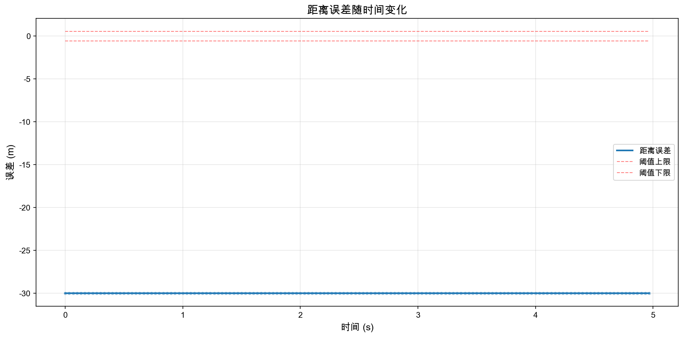
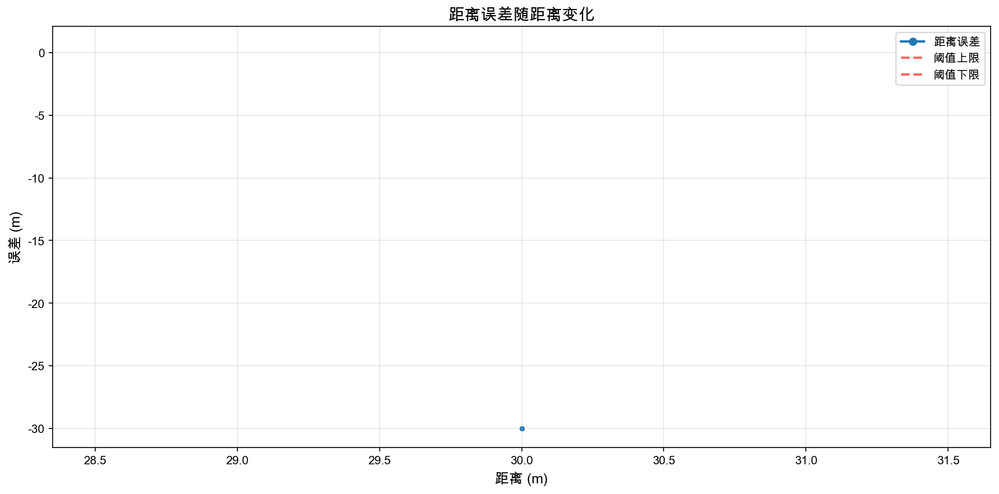
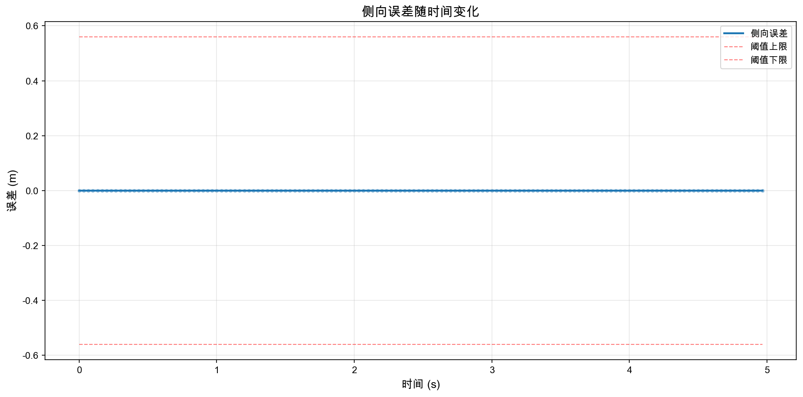
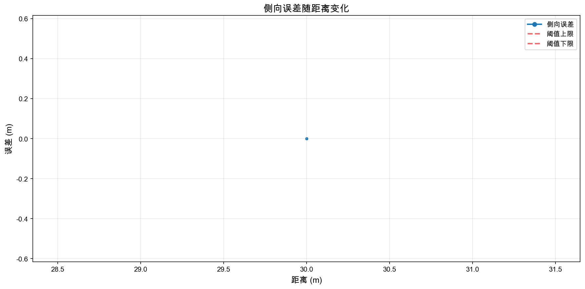
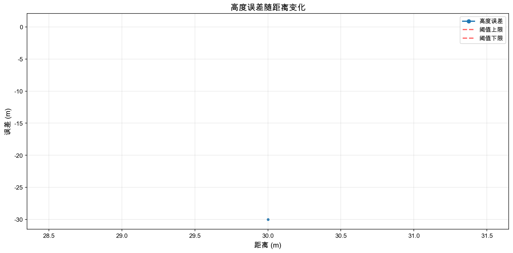
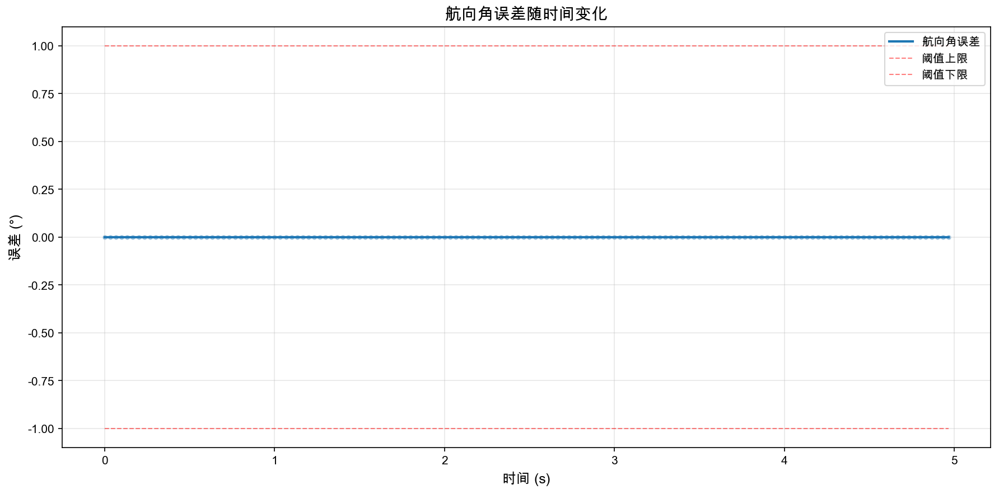
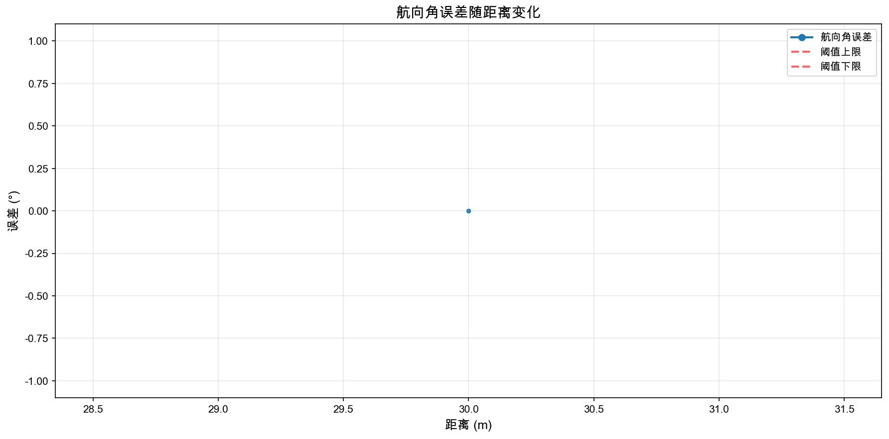
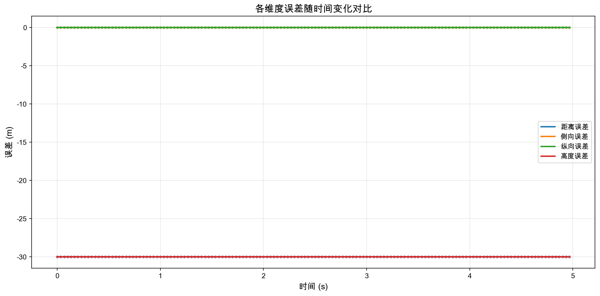
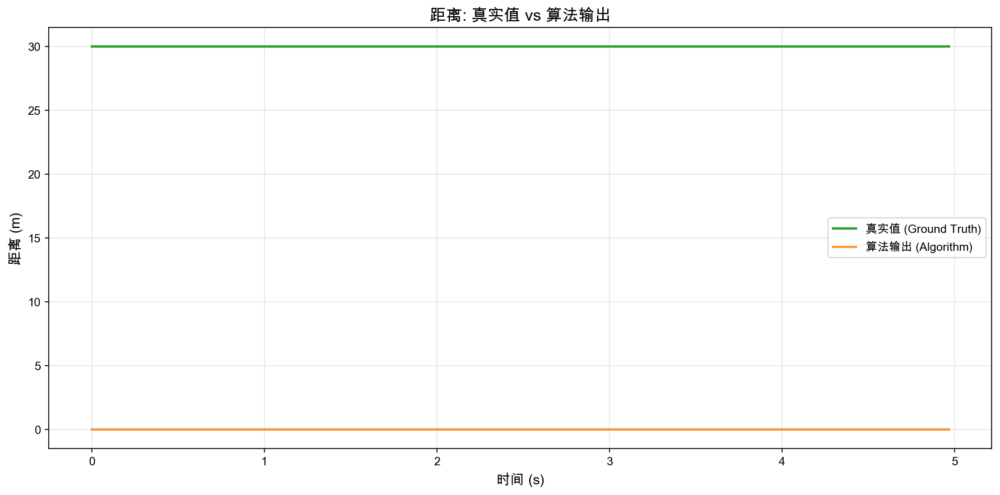

仿真ID: closed_loop_20251122_154229
软件版本: 1.0.5
数据生成时间: 2025-11-22T15:42:29.848444
配置帧率: 30 fps
配置时长: 30.0 秒
下滑道: unknown
海况: 3
150
4.97s
30.0m ~ 30.0m
30.00m
精度要求: (0.5 + 0.2% × D) 米
| 距离范围 | 总点数 | 符合点数 | 符合率 | 平均误差 | 最大误差 |
|---|---|---|---|---|---|
| 0-800m | 150 | 0 | 0.0% | 30.0000m | 30.0000m |
| 0-1500m | 150 | 0 | 0.0% | 30.0000m | 30.0000m |
精度要求: (0.5 + 0.2% × D) 米
| 距离范围 | 总点数 | 符合点数 | 符合率 | 平均误差 | 最大误差 |
|---|---|---|---|---|---|
| 0-800m | 150 | 150 | 100.0% | 0.0000m | 0.0000m |
| 0-1500m | 150 | 150 | 100.0% | 0.0000m | 0.0000m |
精度要求: (0.5 + 0.2% × D) 米
| 距离范围 | 总点数 | 符合点数 | 符合率 | 平均误差 | 最大误差 |
|---|---|---|---|---|---|
| 0-800m | 150 | 150 | 100.0% | 0.0000m | 0.0000m |
| 0-1500m | 150 | 150 | 100.0% | 0.0000m | 0.0000m |
精度要求: (0.5 + 0.2% × D) 米
| 距离范围 | 总点数 | 符合点数 | 符合率 | 平均误差 | 最大误差 |
|---|---|---|---|---|---|
| 0-800m | 150 | 0 | 0.0% | 30.0000m | 30.0000m |
| 0-1500m | 150 | 0 | 0.0% | 30.0000m | 30.0000m |
精度要求: 1°
| 距离范围 | 总点数 | 符合点数 | 符合率 | 平均误差 | 最大误差 |
|---|---|---|---|---|---|
| 0-800m | 150 | 150 | 100.0% | 0.0000° | 0.0000° |
| 0-1500m | 150 | 150 | 100.0% | 0.0000° | 0.0000° |
| 误差类型 | 平均值(Mean) | 标准差(Std) | 最大值(Max) | 均方根(RMSE) |
|---|---|---|---|---|
| 距离误差 | 30.0000m | 0.0000m | 30.0000m | 30.0000m |
| 侧向误差 | 0.0000m | 0.0000m | 0.0000m | 0.0000m |
| 纵向误差 | 0.0000m | 0.0000m | 0.0000m | 0.0000m |
| 高度误差 | 30.0000m | 0.0000m | 30.0000m | 30.0000m |
| 航向角误差 | 0.0000° | 0.0000° | 0.0000° | 0.0000° |








